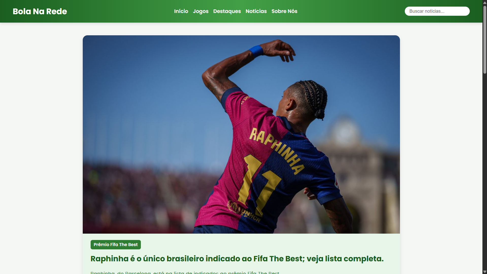
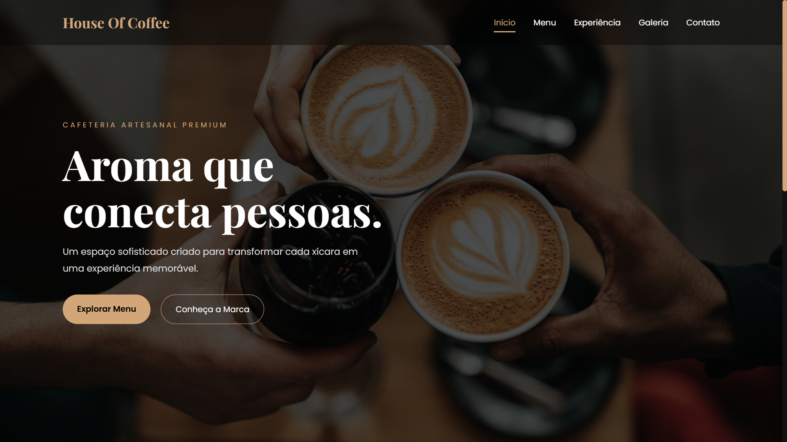

HTML
Estruturação de páginas com HTML semântico.
EM APRENDIZADOEM CONSTANTE APRENDIZADO
Olá, seja bem-vindo(a)!
Sou Weverton Kauã, desenvolvedor em formação e estudante de Informática para Internet. Estou construindo minha jornada na tecnologia com curiosidade, criatividade e vontade de fazer a diferença.
Curiosidade para aprender.
Criatividade para construir.
Vontade de evoluir.
01 — SOBRE MIM
Sou estudante de Informática para Internet e estou desenvolvendo minhas habilidades em programação e criação de experiências para a web. Gosto de explorar ideias, transformar referências em projetos e aprender fazendo.
Tenho facilidade para aprender, gosto de trabalhar em equipe e procuro contribuir com criatividade, responsabilidade e iniciativa. No futuro, quero atuar na área de tecnologia e também motivar outras pessoas a conhecerem e seguirem esse caminho.
02 — HABILIDADES
Estas são algumas das tecnologias e ferramentas que fazem parte da minha jornada de aprendizado.
Estruturação de páginas com HTML semântico.
EM APRENDIZADOEstilização, layouts e adaptação para diferentes telas.
EM APRENDIZADOInteratividade e comportamentos dinâmicos em sites.
EM APRENDIZADOLógica de programação e desenvolvimento.
EM APRENDIZADOPrimeiros passos com aplicações web em Python.
EM APRENDIZADOConsultas e organização de dados em bancos de dados.
EM APRENDIZADOExploração de interfaces e prototipação visual.
EM APRENDIZADO03 — PROJETOS SELECIONADOS
Projetos desenvolvidos durante meus estudos, transformando conhecimento em experiências práticas de desenvolvimento web.

Site com proposta de jornalismo esportivo, desenvolvido em sala de aula para apresentar notícias e conteúdos sobre futebol.

Site de uma cafeteria fictícia, criado para explorar a identidade visual de uma marca e desenvolver uma presença digital moderna e acolhedora.
Meu espaço profissional na web, criado para reunir minha trajetória, habilidades e projetos enquanto continuo evoluindo na programação.
Falar sobre o projetoOs links dos projetos podem ser atualizados para os repositórios específicos assim que você publicá-los no GitHub.
04 — CONTATO
Estou aberto a trocar ideias, aprender com outras pessoas e conhecer oportunidades na área de tecnologia.
Você pode entrar em contato pelos canais abaixo.
Compartilhe apenas os dados de contato que você se sentir confortável em deixar públicos.